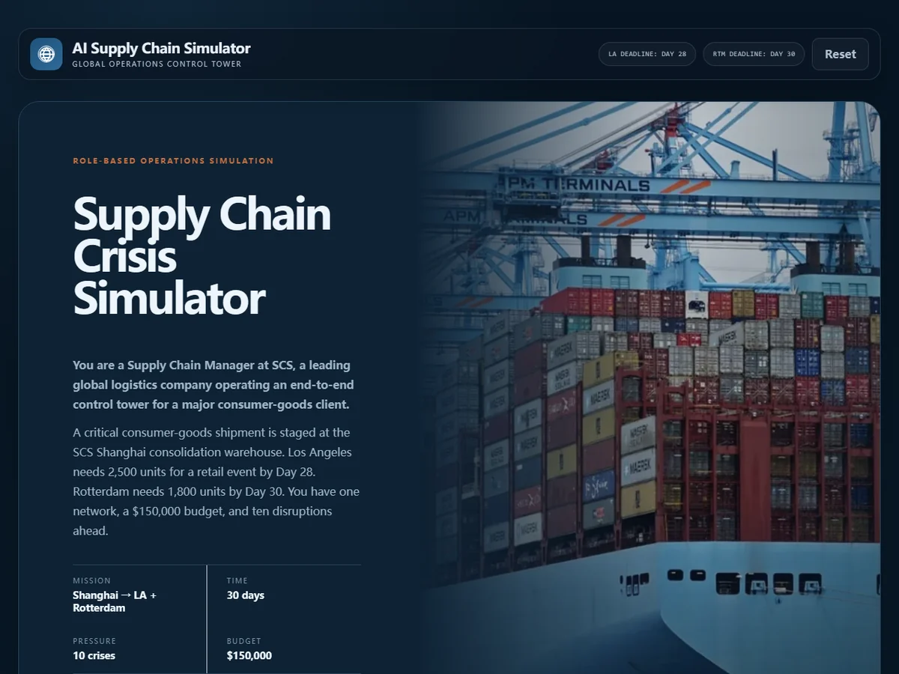
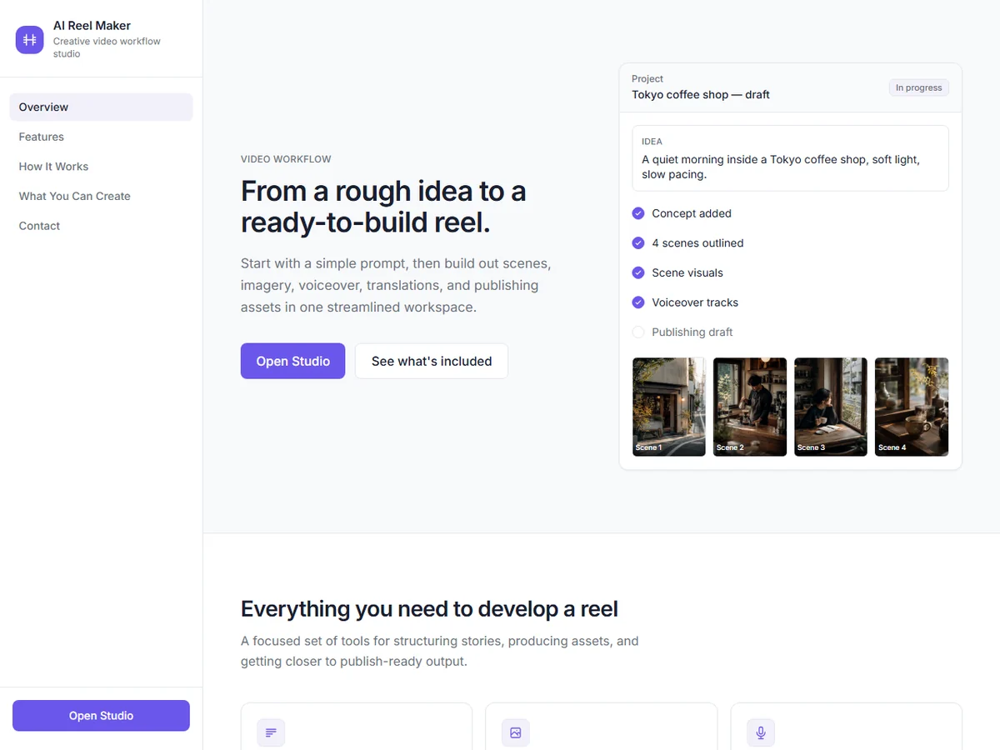
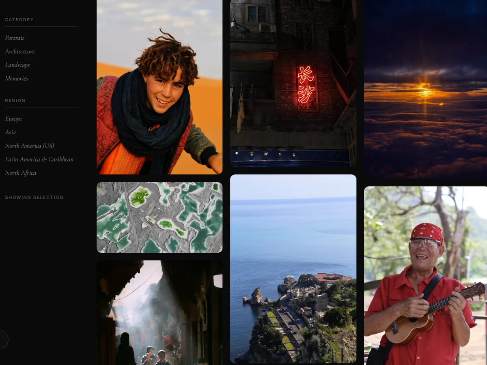
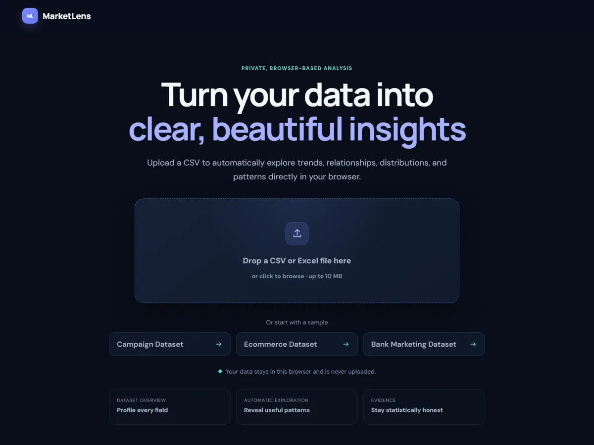

2025
STRIXI Digital
Product Management Intern
Rotterdam, Netherlands
Translated complex operational needs into scalable ERP workflows, product requirements, and end-to-end user scenarios in collaboration with engineers and designers.
I’m interested in how technology, business, and cross-cultural perspectives can come together to create products that are useful in the real world.

I have always been curious about new fields, how different systems work, and what can happen when ideas from different worlds come together. That curiosity has taken me through technology, public policy, marketing, global supply chains, and social entrepreneurship research.
Across these experiences, I learned to navigate complex systems, understand the people within them, and translate diverse perspectives into practical, well-grounded ideas.
Over time, that curiosity led me to technology, where I want to keep learning, building, and growing. I am especially drawn to innovation and to creating ideas that can make everyday life more positive, efficient, and meaningful.
Product Management Intern
Translated complex operational needs into scalable ERP workflows, product requirements, and end-to-end user scenarios in collaboration with engineers and designers.
Constituent Service Intern
Managed constituent casework and coordinated access to public services across government agencies, nonprofits, and community organizations.
Digital Marketing Intern
Developed localized content strategies and used audience insights to strengthen engagement across North American digital platforms.
Supply Chain & Operations Analyst
Analyzed cross-border supply chain operations and supported data-driven decisions across sourcing, transportation, warehousing, and fulfillment.

Supply Chain Crisis SimulatorInteractive supply chain decision simulator.

AI Reel MakerAI-powered short-form video creator.
 Artly
Artly
Turn photos into playful, stylized artwork.

Marceline's PhotographyPortrait and travel photography archive.

MarketLensInteractive market data visualization.
GSE India is a two-semester consulting practicum at Yale School of Management, led by Professor Asha Ghosh, where interdisciplinary student teams partner with social enterprises to address real-world challenges through strategy consulting and field research.
For my project, our team advised English Quest, a social enterprise dedicated to expanding access to English education for underserved communities in India. We conducted two weeks of field research across Bangalore, Mumbai, Delhi, and Jaipur, engaging more than 30 stakeholders including employers, nonprofit leaders, and educators. Drawing on these insights, we developed recommendations spanning product strategy, workforce development, ecosystem partnerships, and market expansion.
Our work helped inform English Quest's strategic pivot toward AI-powered English upskilling and the launch of a workforce-focused employment program.
Conducted applied research on China's new retail industry, benchmarking leading retailers including Yonghui Superstores and Freshippo to evaluate competitive strategy, digital transformation, consumer behavior, and emerging market trends.
Bridge is a cross-cultural communication platform reimagining how people connect across languages, cultures, and communities. We believe meaningful conversations should never be limited by language, culture, or circumstance. Everyone deserves the opportunity to be heard, understood, and to belong.
Bridge is currently in stealth mode, and we look forward to sharing more when the time is right.
Served as Student Lead for Yale’s Global Network Week at Hitotsubashi University, learning alongside students from 33 leading business schools worldwide while exploring Japan’s super-aging society and the business models emerging in response to demographic change.
Led classroom sessions through USC CALIS's Teaching International Relations Program, supporting high school students as they explored global issues, identity, and cross-cultural perspectives.
I was born in Hangzhou, China. Since I was a child, listening to foreigners speak what I thought was “gibberish” was a common part of my daily life. I often spent time playing at my mother’s office for her trading company, where I became accustomed to meeting people who looked, spoke, and even ate differently from me. Such was the nature of my upbringing, one rich in exposure to people from all walks of life, cultures, and perspectives.
Looking back, I realize how deeply those early experiences shaped me. My mother encouraged me to think beyond the invisible walls around us, to look past where I was born, and to imagine a life without being too afraid of distance, difference, or limitations.
I was never the smartest student in the classroom, but I was always curious about what existed beyond it. That curiosity led me to stories from different cultures, new languages, and eventually, a life far from home.
In 2016, I moved to New Orleans for high school. I was young, my English was far from perfect, and almost everything around me felt unfamiliar. But slowly, my world began to grow. Over the next ten years, I lived and studied in different places, met people from backgrounds very different from my own, and experienced more kindness than I could ever have expected.
Many people helped me when they did not have to. They made unfamiliar places feel less lonely and helped shape the person I am today. Because of them, I believe kindness and open communication can bring people together, even when they come from very different worlds.
I enjoy helping others, contributing to the communities I become part of, and spending time on things that feel meaningful. I care deeply about animal welfare and try to stay actively involved wherever I go.
Outside of work, I love photography, traveling, and canyoning. I enjoy capturing small moments, discovering unfamiliar places, and meeting people from different cultures. So far, I have traveled to more than 30 countries, and my next goal is to explore South America.
It has now been ten years since I first left home in 2016. Looking back, I feel grateful, happy, and still a little surprised by how far curiosity has taken me. Now, in 2026, I am nervous, but also excited to see how far I’ll go.


32 countries visited across 4 regions. Drag to rotate, scroll to zoom, and hover over a marker for details.
Thank you. Your request has been received.